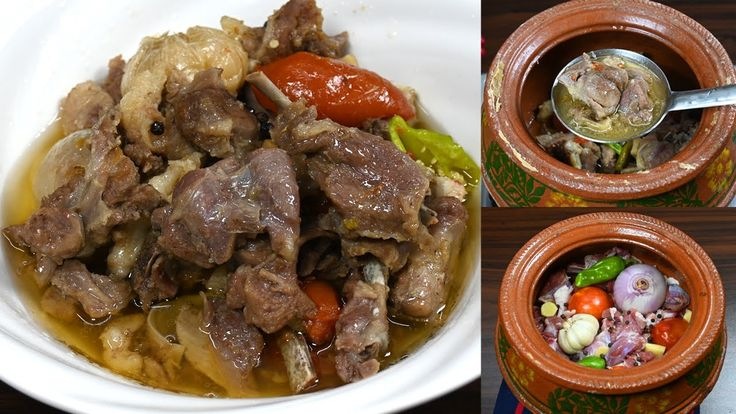

Khyber
Pakhtoonkhwa
Khyber Pakhtoonkhwa
Khyber Pakhtunkhwa (KP), located in the northwestern region of Pakistan, is known for its rich history, cultural diversity, and strategic importance. Bordered by Afghanistan to the west, it serves as a vital link between South and Central Asia. Peshawar, the provincial capital, has been a cultural and trade hub for centuries, lying on the ancient Silk Road. Historically, KP has been influenced by various civilizations, including the Gandhara, Persian, Greek, and Mughal empires, making it an archaeological treasure. It is home to many ancient Buddhist sites, notably in Swat and Mardan. The province is also the gateway to the Khyber Pass, a historic mountain pass that has been a crucial route for invasions and trade. KP's population is predominantly Pashtun, known for their distinct cultural identity, strong tribal affiliations, and adherence to Pashtunwali, a traditional code of conduct emphasizing hospitality and honor. The province’s rugged terrain, comprising mountains, valleys, and rivers, offers breathtaking landscapes and outdoor adventure opportunities, especially in regions like Swat and Chitral.

Khyber Pakhtunkhwa Culture
The culture of Khyber Pakhtunkhwa (KP) is deeply rooted in Pashtun traditions, with the majority of its people adhering to Pashtunwali, a code of ethics centered on hospitality, honor, and justice. Hospitality is a key value, with guests treated with utmost respect. The Pashto language dominates, while Hindko and Kohistani are also spoken in certain regions. KP is known for its distinct folk music, which includes instruments like the rabab and mangey, and vibrant dance forms like the Attan, a traditional group dance performed during festive occasions. The province has a rich tradition of oral poetry, with famous poets like Khushal Khan Khattak and Rahman Baba shaping Pashto literature. Festivals like Eid, Jashn-e-Baharan, and traditional tribal gatherings reflect the communal and celebratory spirit of the people. Clothing is typically modest, with men wearing shalwar kameez and women donning embroidered dresses and scarves. The people of KP take pride in their heritage, blending ancient traditions with modern influences.
KPK Foods
The cuisine of Khyber Pakhtunkhwa (KP) is a reflection of its rich cultural heritage and rugged landscape, with dishes emphasizing meat, grains, and hearty flavors. The food is largely influenced by Pashtun culture, characterized by simple yet flavorful meals, often prepared with minimal spices but rich in natural taste. Meat, especially lamb and beef, is central to the diet. Popular dishes include Chapli kebab, a spicy minced meat patty, and Kabuli Pulao, a fragrant rice dish with meat and raisins. Lamb karahi, a stew cooked with tomatoes and green chilies, is also a favorite. Traditional bread, such as naan or roti, accompanies most meals. Dairy products like yogurt and butter are common, and meals are often served with fresh vegetables and chutneys. Tea (green or black) is a staple beverage, enjoyed multiple times a day. KP’s cuisine reflects its people’s love for hearty, communal meals shared with family and friends.
Green Tea
In Khyber Pakhtunkhwa, green tea (qehwa) is enjoyed for its fragrant, digestive qualities, while black tea with milk and sugar is popular for breakfast and social gatherings, reflecting local hospitality.
Chapli Kabab
Khyber Pakhtunkhwa's Chapli Kabab is a spicy, flavorful minced meat patty made with ground beef or lamb, mixed with herbs, spices, and tomatoes, traditionally served with naan or chutney.
Kabuli Pulao
Khyber Pakhtunkhwa's Kabuli Pulao is a fragrant rice dish made with tender meat, raisins, carrots, and almonds, flavored with mild spices, offering a blend of sweet and savory flavors.

Namkeen Gosht
Khyber Pakhtunkhwa's Namkeen Gosht is a simple yet flavorful dish made with lamb or beef, cooked with minimal spices—mainly salt (namak), green chilies, and garlic—allowing the natural meat flavors to shine.
Tawa Fried
Khyber Pakhtunkhwa's Tawa Fried dish typically features marinated meat or fish, seasoned with spices, and fried on a flat griddle (tawa), creating a crispy, flavorful outer layer and tender inside.
Dum Pukht
Dumba Dum Pukht is a slow-cooked, tender lamb dish rich in fat and flavor, paired with Kabuli Pulao, a fragrant rice dish with raisins, carrots, and mild spices, creating a luxurious, hearty meal.
Paaye
Khyber Pakhtunkhwa's Paaye is a rich, flavorful stew made from slow-cooked trotters (feet) of lamb or beef, simmered with spices and herbs, creating a hearty, comforting dish often enjoyed with naan.

Garlic Naan
Khyber Pakhtunkhwa's Garlic Naan is a soft, leavened flatbread topped with minced garlic and fresh coriander, baked in a tandoor for a crispy exterior and aromatic, flavorful taste.